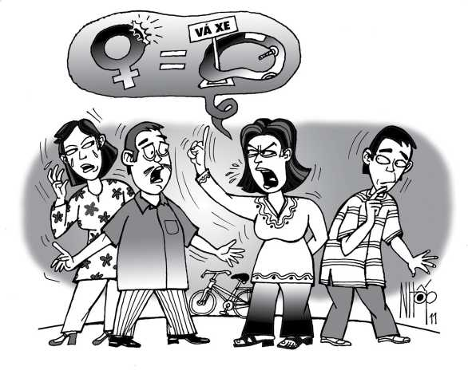

Tòa án nhân dân thành phố Cần Thơ (cũ) mở phiên tòa dân sự, xét xử vụ kiện đòi bồi thường thiệt hại ngoài hợp đồng. Thẩm phán Dương Văn Đạo ngồi ghế chủ tọa phiên tòa. Do vụ kiện tế nhị, có liên quan đến trinh tiết của một phụ nữ trẻ nên ông nhắc thư ký tòa đề nghị bà con không vào dự xem. Gần như đây là một vụ xử kín.
Ra trước tòa, có cô A nguyên đơn và người cha; anh B bị đơn và người mẹ. Trước đó, thẩm phán Đạo đã cho đôi bên hòa giải nhiều lần nhưng không thành. Vì vậy phải xét xử.
Nguyên đơn A trình bày: Cô mới 24 tuổi, thận trọng giữ mình như ngọc, chưa có bạn trai. Một ngày, sau ca tan sở, cô đạp xe ra khỏi khu công nghiệp Trà Nóc, định quẹo qua đường lớn về nhà thì bị va quẹt. Người va quẹt là anh B. Anh B chạy xe gắn máy, quẹo ẩu nên tông nhằm vào xe đạp của cô, khiến cô tụt hai tay khỏi ghi-đông và té ngã.
Chiếc xe đạp không hề hấn gì nhưng cú té ngã khiến cô cảm thấy đau ở bộ phân sinh dục. Về nhà, cô đi tắm mới biết mình bị chảy máu chỗ kín. Hoảng hốt, sáng hôm sau cô vào bệnh viện X ở Cần Thơ khám chuyên khoa. Bác sĩ kết luận cô bị rách mới màng trinh ở múi 3 giờ. Cô phải lấy giấy chứng thương và kiện anh B - người gây ra cho cô tai nạn trên, ra tòa.
Cô nghĩ rằng trinh tiết là cái đáng quý nhất của người phụ nữ. Ngày sau, cô sẽ lập gia đình. Việc rách màng trinh đáng tiếc này có thể làm ảnh hưởng rất lớn tới danh dự, nhân phẩm của cô. Cô đề nghị tòa buộc anh B phải đền bù cho cô số tiền 5 triệu đồng về thiệt hại danh dự, phẩm giá do vết thương ở cái... ngàn vàng.
Bị đơn B trình bày: Anh rất xin lỗi cô A về chuyện rách màng trinh. Thật ra, việc va quẹt xe xảy ra nhẹ nhàng, ngoài ý muốn của cả hai bên nhưng anh không ngờ lại gây ra cho cô vết thương như vậy. Anh thú thật anh mới lớn lên, cũng chưa hề biết màng trinh là... cái giống gì. Anh không đồng ý đền bù số tiền trên, chỉ đồng ý đền bù những khoản thuốc men, khám bệnh nếu cô A có biên lai hợp lệ.

.Bởi nguyên đơn và bị đơn còn quá trẻ, chưa lập gia đình và chưa có tài sản riêng nên cha của nguyên đơn A và mẹ của bị đơn B ra trước tòa như hai người có quyền lợi và nghĩa vụ liên quan.
Mẹ của bị đơn trình bày rằng bà cũng rất xót xa khi biết cô A té ngã và rách màng trinh như cô trình bày. Trong những lần hòa giải trước đây, bà có đề nghị cho anh B hỏi cưới cô A làm vợ thì mọi chuyện đều êm nhưng hổng hiểu sao gia đình cô A cứ muốn kiện ra tòa.
Bà đưa ngón tay út lên và nói: “Cháu ơi, cái màng trinh mà nhằm nhò gì, nó nhỏ xíu xiu hà. Tui nghe nói bây giờ các ông bác sĩ giỏi lắm. Ở trên thành phố, họ vá
nó hà rầm, dễ ợt như mình vá... ruột bánh xe vậy. Cho nên, gia đình tui chỉ đồng ý đền tiền nếu cháu chịu đi vá thôi. Vá nhiêu đền nhiêu”.
Nghe đối tác nói chuyện đâm hơi, người cha của nguyên đơn A giựt gân đùi đụi. Không đợi tòa cho phép, ông la lớn: “Chèng đéc ơi, chị nói cái gì kỳ vậy? Vấn đề màng trinh là cái ngàn vàng trong đời con gái người ta. Nó đâu phải là... cái lu, cái khạp mà lủng chỗ nào mình dùng xi-măng vá lại chỗ đó? Sở dĩ tui không đồng ý gả con gái tui cho con trai chị vì con gái tui lớn hơn con trai chị hai tuổi. Người ta nói gì “Nhứt gái hơn hai, nhì trai hơn một” nhưng trong vụ này, con gái tui không thể nhứt được. Con gái tui về làm dâu nhà chị, hổng chừng buồn buồn nhớ lại vụ kiện này, chị nói... tiếng Đức với nó thì nó làm sao chịu nổi? Tui hổng đồng ý vá may gì hết. Bên chị phải đền bù cái vụ... mất trinh cho con gái tui”.
Thấy tình hình khu vực... Trung Đông có vẻ căng thẳng, thẩm phán Đạo động viên hai bên bình tĩnh. Ông cho biết trước khi xét xử vụ án, ông đã qua bệnh viện gặp bác sĩ khám cho cô A, hỏi ý kiến của nhà chuyên môn này. Vết rách của cô A ở múi 3 giờ là vết rách nhẹ.
Trong cái nhìn đạo đức truyền thống của dân tộc ta, trinh tiết là cái đáng quý của người phụ nữ. Ông chia sẻ và thông cảm với tâm trạng lo lắng của nguyên đơn A về việc vết thương tế nhị ấy có thể sẽ ảnh hưởng đến hạnh phúc gia đình mai sau nếu gặp phải người chồng khó tính. Tuy nhiên, rõ ràng nguyên đơn vẫn là một phụ nữ trong trắng, đức hạnh, tự vấn lương tâm không có điều chi đáng xấu hổ khi cần nói thật tai nạn này với người chồng tương lai.
Bác sĩ chuyên khoa đã cho ông biết vết thương nhẹ của nguyên đơn có thể khắc phục được bằng vi phẫu thuật. Tiền chi phí của ca vi phẫu thuật này khoảng 500 ngàn đồng.
Việc té ngã do va quẹt xe dẫn đến bị thương nhẹ ở vùng tế nhị là ngoài ý muốn của đôi bên. Luật dân sự cũng chỉ cho phép đền bù những thiệt hại thực tế của nguyên đơn.
Tòa tuyên bố: Bị đơn B phải đền bù cho nguyên đơn A số tiền 500 ngàn đồng để khắc phục hậu quả vết thương và 80 ngàn đồng tiền khám vết thương, lấy giấy chứng thương. Ông cũng dặn cô gái hãy an lòng. Trước khi lập gia đình, cô nên nói thật với người chồng rằng mình bị ngã xe, xuất trình giấy chứng thương và án văn dân sự của tòa để anh khỏi thắc mắc nghi ngờ. Bởi đó là bằng chứng của sự trong trắng vậy. Vâng, tôi cũng đưa lại thông tin này, góp thêm cho cô A một bằng chứng của sự trong trắng.